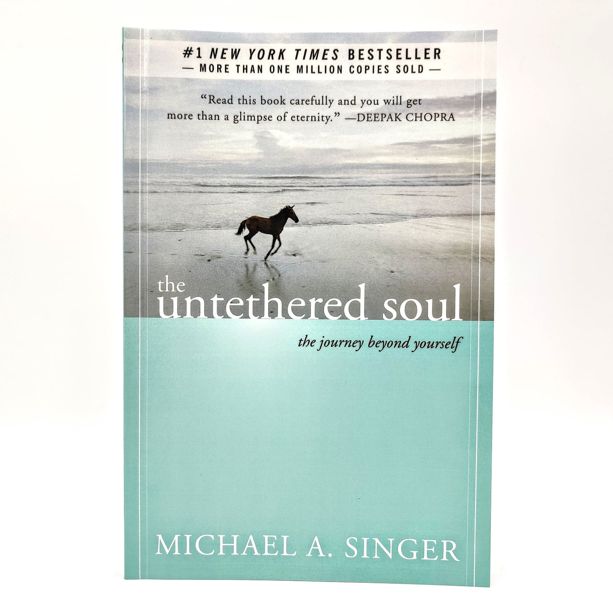

Library › Self-Improvement
The Untethered Soul — Summary & Key Lessons

The journey beyond yourself — you are not the voice in your head; you're the one who hears it.
📖 OPEN THE FULL INTERACTIVE BREAKDOWN →🌐 Read it in Hindi, Hinglish, Gujarati, Tamil & 22 more languages — free, with audio.
💡 The Big Idea
Singer's question opens the trap: you have a mental roommate — the inner voice narrating, judging, rehearsing, and re-litigating nonstop — and most people spend life mistaking that voice for themselves. The liberation sequence: notice you can HEAR the voice (therefore you aren't it — you're the awareness behind it: the Self as witness); understand SAMSKARAS — stored, unfinished emotional energies that the mind protects and re-triggers (the thorn you build a life around instead of removing); practice the core skill: RELAX AND RELEASE at the exact moment disturbance rises (feel it fully, let it pass THROUGH rather than storing it); refuse to close the heart (the energy centers stay open by policy, not weather); take down the INNER FORTRESS (the self-concept you exhaust yourself defending); and adopt the two great teachers — death (the deadline that prices everything honestly) and unconditional happiness (the decision, made once, that no event gets to revoke). The prize isn't calm circumstances; it's a seat behind them.
🧠 The 4 Key Lessons
Lesson 1: The Roommate in Your Head: Meeting the Witness
Part 1: Awakening Consciousness
Singer's opening exercise: listen to the voice in your head — it narrates the drive, judges the stranger, re-argues yesterday's meeting, rehearses tomorrow's — and notice the pivotal fact: YOU CAN HEAR IT. Hearer and voice cannot be the same entity; therefore the real you is the WITNESS — the awareness that observes thoughts and emotions the way eyes observe objects. His roommate test makes it visceral: if a person followed you around saying aloud what your inner voice says ('you'll blow this... she hates you... check the phone again'), you'd never tolerate them — yet you not only tolerate the inner version, you take its every word as YOUR OWN VERDICT. The voice's actual job, Singer explains, is pseudo-control: re-narrating the world to make it feel manageable ('it's cold out' adds nothing to the cold except the feeling that you're on top of it). The practice that follows all of it: don't fight the voice, don't obey it — OBSERVE it, persistently, until the center of gravity shifts from the talker to the listener. That shift is the book.
📖 Example: The roommate externalization is Singer's masterstroke exhibit: he walks the reader through a full day with the inner voice embodied as an actual companion — panicking in traffic, flip-flopping about the party, insulting your body at the mirror, replaying a… Read the full example →
⚡ Do this: Run the roommate audit for three days: several times daily, transcribe the voice's last few sentences verbatim — then read them as if a friend had said them aloud. Practice the shift each time: 'I am the one HEARING this.' The observation, repeated, is the entire technique.
Lesson 2: Thorns and Samskaras: Stop Building Your Life Around the Wound
Part 2: Experiencing Energy / The Thorn Parable
Singer's central parable: a man with a thorn embedded in his arm faces two options — remove it (painful once, free forever) or protect it (pad it, engineer around it, restrict every hug, sport, and sleeve that might touch it — a life progressively redesigned as thorn-security). SAMSKARAS are the inner thorns: emotional energies from unprocessed experiences — the betrayal, the humiliation, the loss — that didn't pass through when they happened and were stored instead; the mind then becomes their security detail: avoiding triggers, curating relationships, pre-screening life for anything that might brush the stored pain (and everything does — the song, the name, the tone of voice). The economics Singer forces: protection is INFINITE cost (the maintenance never ends and the protected thorn still hurts) while removal is FINITE (feel it fully once — or several times — as it surfaces, without re-storing it). The skill is counterintuitive: when old pain rises, the win condition is not making it stop but LETTING IT PASS THROUGH — attention open, story declined, energy completing its interrupted exit.
📖 Example: The thorn's daily-life translations carry the chapter: the man who can't hear a certain name without a mood collapse — whose whole social architecture (which parties, which topics, which friends) turns out to be thorn-infrastructure; the woman whose jealousy… Read the full example →
⚡ Do this: Name your best-defended thorn (the topic/person/memory your life quietly routes around). Next time it's brushed, run the removal protocol: stay, breathe, feel the energy fully WITHOUT narrating or suppressing, and let it finish. Repeat at each surfacing — you're not reopening the wound; you're finally letting it drain.
Lesson 3: Relax and Release: The Moment-of-Disturbance Practice
Part 3: Freeing Yourself
The book's operational core: transformation happens not in meditation cushions but at the MOMENT OF DISTURBANCE — the instant something pokes a samskara and the energy starts rising (the chest tightens, the heat climbs, the voice launches its case). Singer's protocol, drilled to two words: RELAX AND RELEASE — (1) catch the rise early (the earlier the cheaper: at whisper-stage it's a choice; at full-tide it's a hijack), (2) relax the body's clench (shoulders, chest, stomach — the physical grip IS the storage mechanism), (3) lean AWAY from the drama story and let the energy pass through the open space you've made, and (4) — the door policy — decide that the HEART STAYS OPEN regardless: closing (the protective shutdown after every hurt) feels safe and costs everything, because a closed heart blocks the very energy (Singer's 'shakti') that makes life feel alive. His hardest instruction is the policy's unconditional clause: keep the heart open ESPECIALLY when you have every justification to close it — the justified closures are precisely the ones that build the fortress.
📖 Example: Singer's traffic-cut illustration walks the protocol at street scale: the cut-off, the surge, the voice's instant lawsuit ('he can't do that!') — and the fork: clench-and-store (arrive at work still prosecuting, samskara deposited, day colored) versus… Read the full example →
⚡ Do this: Install the early-warning system: identify your body's first disturbance signal (throat, chest, heat) and rehearse the sequence — catch, relax the clench, decline the story, let it pass. Add the policy line to your morning: 'today the heart stays open, including when justified.' Score evenings on releases, not on how few disturbances arrived.
Lesson 4: Death, the Great Teacher — and Unconditional Happiness
Parts 4–5: Beyond / Living Life
The closing summits. THE INNER FORTRESS: most psychological suffering is maintenance of the self-concept — the curated identity whose defense (managing others' opinions, winning every internal case, avoiding every exposure) consumes a lifetime's energy; Singer's demolition order: notice the fortress is protecting a PICTURE, not you — the witness needs no defense, and every wall removed returns energy. DEATH as teacher: the deadline is the only honest accountant — 'learn to live as though you are facing death at all times' not as morbidity but as pricing: the argument, the grudge, the postponed call all re-price instantly against the fact that any week could be the last (his challenge: if death gave you one more year, exactly what would change? — then notice you've been GIVEN that year, every year). And the destination: UNCONDITIONAL HAPPINESS — Singer's most radical instruction: make happiness a DECISION rather than a response ('do you want to be happy?' answered ONCE, unconditionally, with no event granted veto power); every conditional version ('happy IF...') hands your inner state's keys to circumstances that never agreed to protect them. The untethered life, finally: events still happen — the seat behind them is simply never surrendered again.
📖 Example: The death-teacher chapter's exercise became the book's most-quoted: imagine death arrives and offers the trade — 'one more week, lived fully' — and Singer's turn: you HAVE the week; the only thing death would change is the attention you paid it. His… Read the full example →
⚡ Do this: Take the vow experimentally: 'for seven days, no event — large or trivial — gets to revoke my baseline okay-ness.' Log every attempted revocation and your response. Run the death-pricing weekly: one hour, one question — 'if this were the last year, what changes?' — and make ONE of those changes while the year is still, verifiably, yours.
✅ 5-Step Action Plan
- Transcribe the roommate; shift daily from voice to listener.
- Name the defended thorn; run the removal protocol at each surfacing.
- Drill relax-and-release at the first body signal; keep the heart-open policy.
- Dismantle one fortress wall: one image-defense dropped this week.
- Take the seven-day unconditional vow; death-price the calendar weekly.
💬 Best Quotes from The Untethered Soul
- “There is nothing more important to true growth than realizing that you are not the voice of the mind — you are the one who hears it.”
- “The only permanent solution to your problems is to go inside and let go of the part of you that seems to have so many problems with reality.”
- “You are not the pain you feel, nor are you the part that periodically stresses out. You are the one who notices these things.”
Interactive version: mark lessons as read, listen in your language, share quote cards.